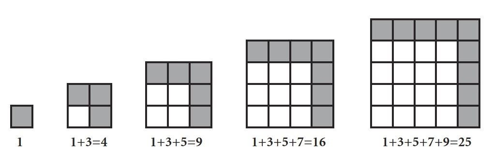

『GGB這個工具幫我了解許多數學題目。』 小四宥羽
（參與多期獵豹數學和GGB，卓越盃全國第六名）
文 朱安強博士
『看上去是幾何問題，實際上是代數的問題』 在日劇《神探伽利略》的改編電影《嫌疑犯 X 的獻身》中，天才數學家與男主講了這句話，男主意識到多數人很容易被表象給矇騙。
【表象底層的思維】
很多數學競賽難題看上去很難，不是解答看不懂，難以理解。而是考生也常被表像所矇騙，沒辦法跳脫固有思維來解題。
先從經典小學奧數題 1+3+5+…+99 來談？
套個等差公式可算出答案，但就沒意識到有趣的平方關係。
1+3+5=9=3^2, 1+3+5+7=16=4^2。 若將這些數字轉化為圖，看成層層遞增的正方形方格，就會覺得原來如此。
就像這道武陵中學科學班 103 的考題
『求 √(x^2+4 ) + √( (x-y)^{2}+1 ) + √((y-5)^{2}+9 ) 的最小值問題』
表層是個代數題，但通過幾何化就可秒解。
還有不少空間幾何題，難以想像其關係，一旦採取座標化，用代數就秒解。
【數形結合思想】
這類題通常就被稱為『數形結合思想』
套句數學家華羅庚的名言
『數缺形時少直觀，形缺數時難入微。』
當數形結合之時，就可欣賞其解題之妙與數學之美，。
這些難以看透表象的題該如何學習。數形轉化能力該如何培養。
有個方法是大量刷題記憶，畢竟小學奧數題也沒多少題型。
但這也是最大學學習誤區，培養了記憶力，而不是分析解構問題能力，到高中數學變化多，就招架不了。
【數形轉化的輔助工具】
該如何融合 『幾何Geometry』 與 『代數Algebra』 兩大數學分支的轉化能力呢？
我 12 年前，初次接觸『Geogebra 』時，就被這迷上了。
終於可以將代數函數問題，圖像化視覺化。而當我想要製作些幾何圖形，也可通過代數的方式來與電腦溝通。
更佩服當時創辦人取名 Geogebra 的巧思。取 『幾何 Geometry』的字首Geo』與『代數 Algebra 』字尾+ gebra 完美表達這軟體的特色。
【考試又不能用電腦！】
宥羽說的『Geogebra這個工具幫我了解許多數學題目』這句話的表象是用Geogebra這個算出答案。那考試不能用電腦，算出答案有何用。
先讓我們想另一個數學學習誤區『套公式手算答案，但不去理解公式』這又有何用呢？對小考試可能有幫助，但對長期數學能力的幫助反而是有限。
所以看宥羽這句話，不能看表象，更要追究底層脈絡。
『用 Geoegebra 算數學，不是拍照解題。』
而是大腦要先解構文字與圖形特徵，再將題目告訴給電腦，這時還要轉化為數學語言，使用向量座標幾何變換關係。就光這層訓練，就練習很多拆解問題能力。而作出圖形後，還要拖拉點改變數值，觀察變化，最後才能歸納總結出結論。所以使用 Geogebra 來想問題，就是個高度的頭腦體操訓練。這也是我自己用這軟體這 10 多年的感動，當我想用這圖形探究數學，同時讓我練習更多數形轉化的思維與能力。
【學習歷程與提煉】
最後佩服宥羽爸爸的洞見。別人看到電腦可能覺得是玩樂的工具。但宥羽爸深知，這些工具的使用，其實能帶給他更多思維能力的拓展。當然最後要有成效，最重要的一點就是動手寫作業，動腦想問題。
最後讓我們一起欣賞宥羽做的 PPT 學習歷程作品集。在他的作品集可看到宥羽也開始接觸 『進位制』、『畢氏定理』、『時分逼近法求根號』、『數列與圖形迭代』、『定弦對定角軌跡』。而要將作品做出來，其思維的訓練其實是遠超乎知道個名詞，還要掌握很多細節，才能將這經典問題通過電腦重現。
另外，再次佩服宥羽爸的引導，深知小四生在這簡報學習歷程輸出，也是培養高階整合能力的重要一環。
低手學習在填塞知識，高手則是通過知識來培養能力。
宥羽同學作品集
獵豹 朱安強老師 GGB2,寒假1/28開課,歡迎參加!
